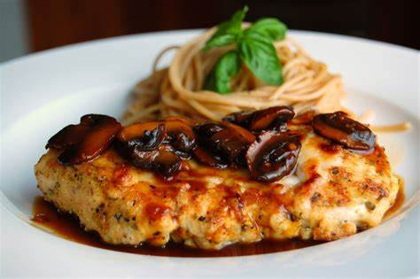
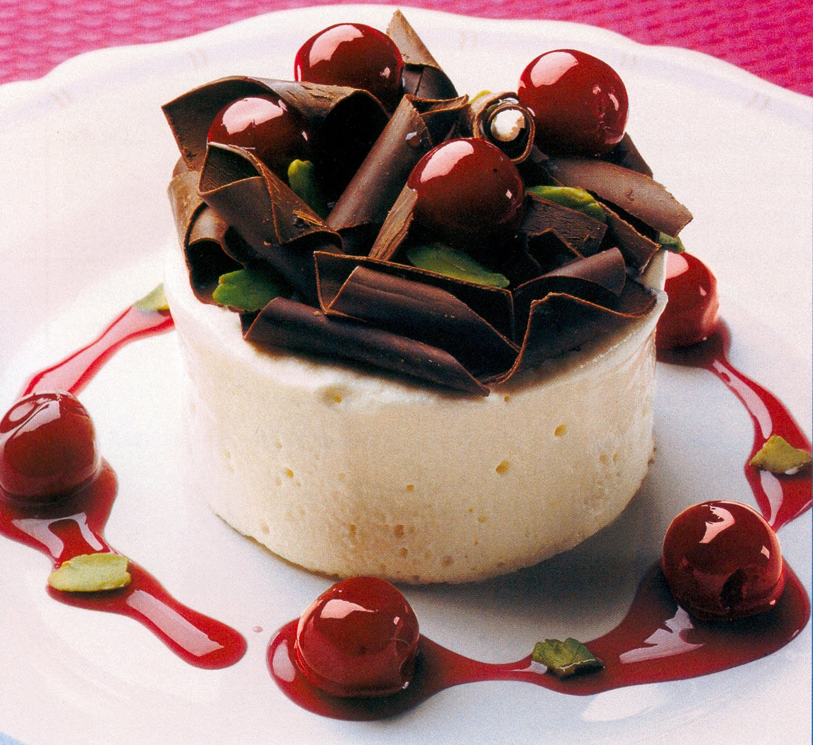

Purpose and Audience
The purpose of this cooking blog is to share delicious recipes, cooking tips, and culinary inspiration with food enthusiasts. The intended audience includes home cooks, food lovers, and anyone interested in improving their cooking skills.
Logo

Colors and Fonts
a creme color and a redish color to resemble a warm and welcoming cooking site
Fonts used: Roboto
Content
Include sections for the home page, recipes page, and cooking tips page. Provide detailed instructions, ingredient lists, and high-quality images for each recipe.
START OF THE COOKING TIPS SUBPAGE
Basic Techniques
Learn the essential cooking techniques that every home cook should know. From chopping vegetables to searing meat, these tips will help you become more confident in the kitchen.

Advanced Techniques
Take your cooking skills to the next level with these advanced techniques. Learn how to make homemade pasta, perfect your baking skills, and more.

Kitchen Tools
Discover the must-have kitchen tools that will make your cooking experience more enjoyable. From high-quality knives to versatile cookware, these tools are essential for any home cook.

Ingredient Substitutions
Learn how to make ingredient substitutions in your recipes. Whether you're out of a specific ingredient or looking for a healthier alternative, these tips will help you make the perfect swap.

START OF THE RECIPES SUBPAGE
Appetizers
Start your meal off right with these delicious appetizers. From classic bruschetta to spicy buffalo wings, there's something for everyone to enjoy.

Main Courses
Discover a variety of main course recipes that are perfect for any occasion. From hearty pasta dishes to flavorful stir-fries, these recipes are sure to impress your family and friends.
Desserts
Indulge your sweet tooth with these delectable dessert recipes. From rich chocolate cakes to light and fluffy cheesecakes, there's a dessert for every craving.
Beverages
Quench your thirst with these refreshing beverage recipes. From fruity smoothies to classic cocktails, these drinks are perfect for any time of day.